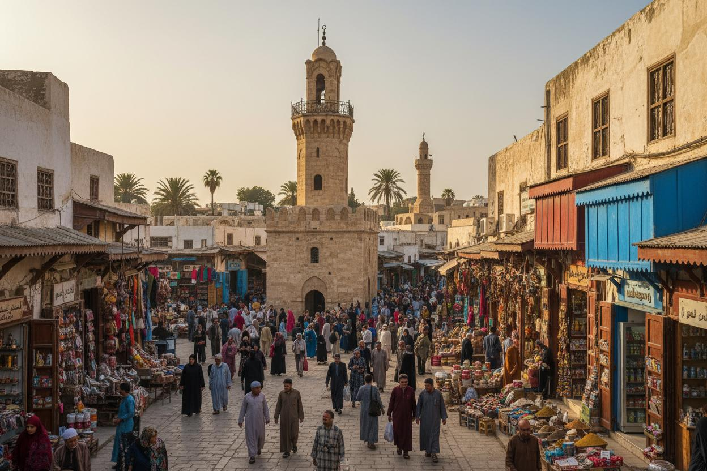
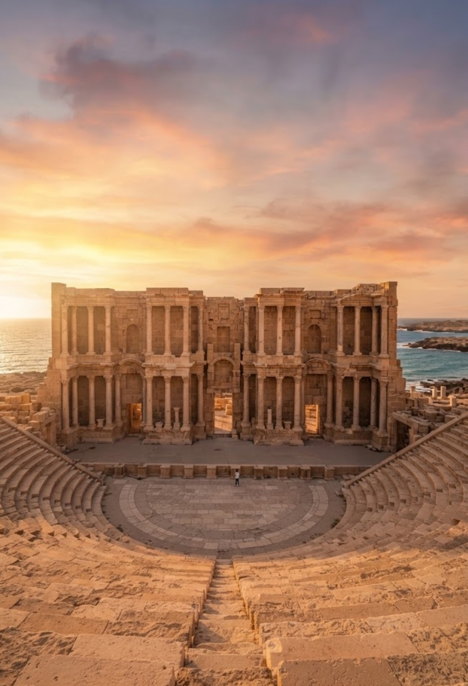

Libya Travel Guide
Discover Libya's most beautiful cities
Your complete guide to the top cities, landmarks, hotels and restaurants in Libya.
Explore NowPopular Libyan Cities
Popular Libyan Cities
Discover Libya's leading cities and the unique cultural and tourist attractions they offer.

12+Cities
25+Hotels
30+Landmarks
40+Restaurants